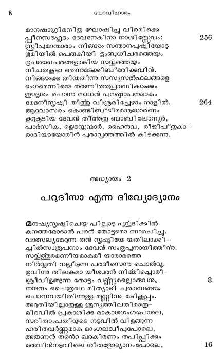
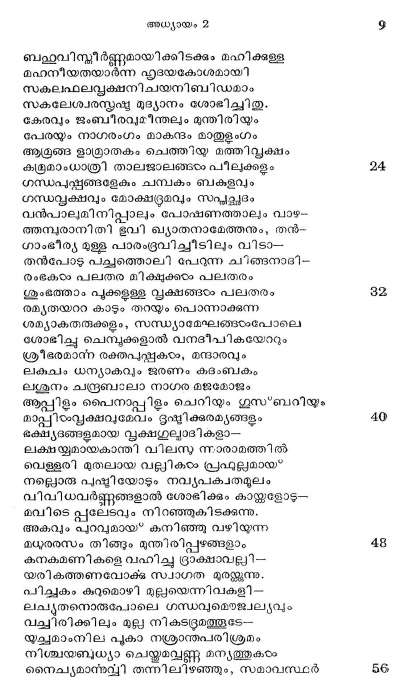
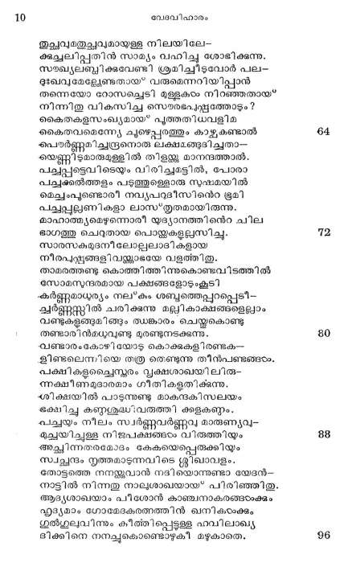
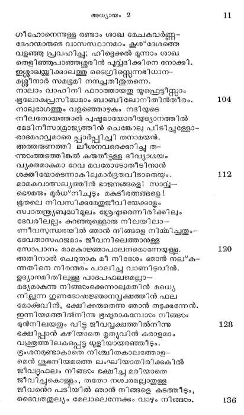
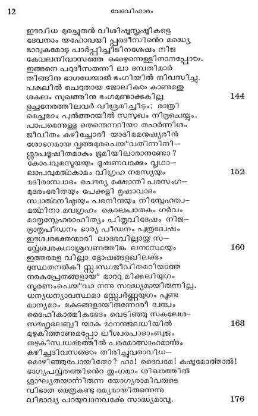
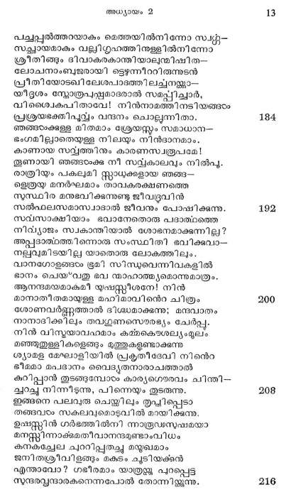
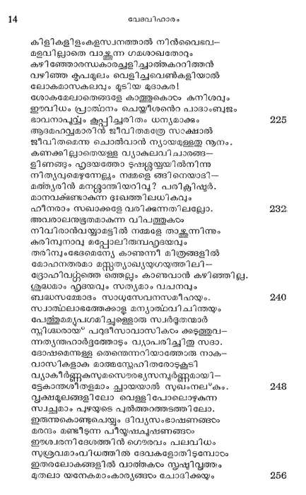
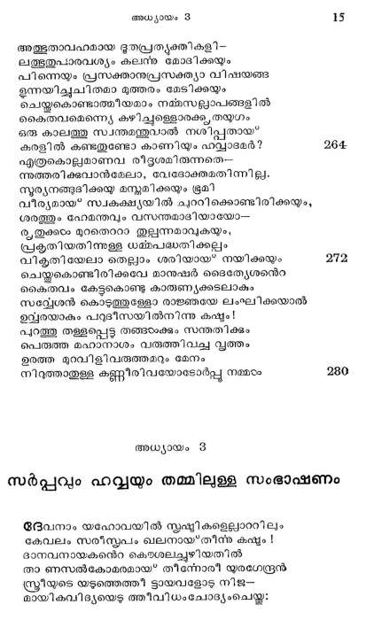

പറുദീസാ എന്ന ഭിവ്യോദ്യാനം
മനുഷ്യസ്ൃഷ്ടിചെയ്ത പില്ലാഴു പു്ദിക്കില്
കനത്തമോദാല് പരന് തോട്ടമൊ ന്നാരചിച്ചു.
വാസ്സല്യമേറുന്ന തന് സൃഷ്ടിയേ യതിലാക്കി--.
ചില്സാരൂപനാം ദേവന് സംതൃപ്പനായിത്തീന്.
സല്വത്തുരമണീയമാകുമീ യാരാമത്തെ
നിര്വ്വതി നല്ലീടുന്ന പരദീസെന്നു ചൊല്വൂ.
ട്ൂവിന്നു തിലകമാ യീശ്വരന് നിമ്മിച്ചൊരീ-.
ശ്രീവിളങ്ങുന്ന തോട്ടം വള്റ്യമല്പൊരുവനും
നന്ദനം ചൈത്രരഥ മിത്യാദി പുരാണങ്ങം
ചൊന്നവയിതിന്നുള്ള മണ്ണിന്നു മടികൃപ്പും.
അറുതിയിലുാതുള്ള ശുന്യത്തിലതിമാത്ര |
മിരവില് പ്രകാശിക്ക മാകാശഗംഗപോലെ,
സരിതാംപതിയുടെ നടുവില് വിളങ്ങുന്ന
ഹരിതവര്ണ്ണമാക മാംഗലദ്വീപുപോലെ,
അരുണന് തന്െറ ഖരകിരണം തപിപ്പിക്കും
മരുവിന്നടുവിലെ ശീതളോദ്യാനംപോലെ,

ബഫഹൂവിസ്കീര്ണ്ണമായിക്കിടക്കും മഹിക്കുള്ള
മഹനീയതയാര്ന്ന ഹൃദയകോശമായി
സകലഫലപ്വക്ഷനിചയനിബിഡമാം
സകലേശ്വരസൃഷ്ട മുദ്യാനം ശോഭിച്ച.
കേരവും ജംബീരവുമീന്തലം മുന്തിരിയും
പേരയും നാഗരംഗം മാകന്ദം മാതുളംഗം
ആള്രങ്ങ ളാ്രാതകം ചെത്തിയ മത്തിവൃക്ഷം
കുമാംധാത്രി താലജാലങ്ങം പീലക്കളും
ഗന്ധപ്പങ്ങളുകം ചമ്പകം ബകളവും
ഗന്ധവൃക്ഷവും മോക്ഷ്രമവും സപൃൃച്ഛദം
വന്പാലുമിനിപ്പാലും പോഷണത്താലും വാഴ-.
മ്പരാനിതി ഭുവി ഖ്യാതനാമേത്തനും, തന്-
ഗാംഭീര്യ മുള്ള പാരംഭരവിച്ചീടിലും വിടാ--
തന്പോടു പച്ചത്തൊലി പേറുന്ന ചറങ്ങനാദി--
രംഭകടം പലതര മിക്ഷുക്കട പലതരം
ശുംഭത്താം പൂക്കളുള്ള വൃക്ഷങ്ങം പലതരം
രമൃതയററ കാടും തറയും പൊന്നാക്കുന്ന
ശമ്യാകതരുക്കളം, സസ്ധ്യാമേഘങ്ങടംപോലെ
ശോഭിച്ചു ചെമ്പൂക്കളാല് വനദീപികയോറും
ശ്രീഭരമാന്ന രക്തപസ്സകടം, മന്ദാരവും
ലക്ചം ധന്യാകവും ജരണം കദംബകം
ലശുനം ചന്ദ്രബാലാ നാഗര മജമോളം
ആപ്പിളും പൈനാപ്പിളം ചെറിയും ഗുസ*ബറിയും
മാപ്പിരവ്ൃക്ഷവുമേവം ദൃഷ്ിക്കുരമ്യങ്ങളും
ഭക്ഷ്യദങ്ങളുമായ വൃക്ഷഗുല്യാദികളാ--
ലക്ഷയ്യമായകാന്തി വിലസ ന്നാരാമത്തില്
വെള്ളരി മുതലായ വല്ലികടം പ്രഫുല്പമായ*
നല്ലൊരു പഷ്ടിയോടും നവ്യപകവതമുലം
വിവിധവര്ണ്ണങ്ങളാല് ശോഭിക്കും കായ്ക്കളോടു--
മവിടെ പ്പലേടവും നിറഞ്ഞുകിടക്കുന്നും
അകവും പറവുമായ* കനിഞ്ഞു വഴിയുന്ന
മധുരരസം തിങ്ങും മുന്തിരിപ്പഴങ്ങളാം
കനുകമണികളെ വഹിച്ച ഗ്രാക്ഷോവല്ലി---
യരികത്തണവോക്ഷ സ്വാഗത മുരയ്കകുന്നു.
പിച്ചകം കുറുമൊഴി മുല്ലയെന്നിവകളി--
ലച്ൃതനൊരുപോലെ ഗന്ധവുഭൌജ്വല്യവും
വച്ചിരിക്കിലം മുല നികടട്ൂമത്തുടേ-
യുച്ഛമാംനില പൂകാ നശ്രാന്തപരിശ്രമം
നിശ്ചയബുധ്യാ ചെയ്യുവെണ്ണ മന്യത്തകടം
നൈച്യമാന്നവുി തന്നിലിഴഞ്ഞും, സമാവസ്ഥര്

തുച്ഛവതച്ഛവുമായുള്ള നിലയിലേ-
കകച്ചലിപ്പതിന് സാമ്യം വഹിച്ചു ശോഭിക്കുന്നു.
സഃഖ്യലബ്ബിക്കവേണ്ടി ശ്രമിച്ചീടുവോര് പല-
ഖവുമേല്േണ്ടതായ* വരുമെന്നറിയിപ്പാന്
തന്നെയോ റോസല്ചെടി മുള്ളകരം നിറഞ്ഞതായ
നിന്നിതു വികസിച്ച സൌരഭപുഷ്ണത്തോടും?
കൈതകളസംഖ്യമായ* പൂത്തതിധവളിമ
കൈതവമെന്ന്യ ചൂടെപ്പരത്തും കാഴ്കണ്ടാല്
ഭപര്ണ്ണമിച്ച്രനൊത ലക്ഷമങ്ങദിച്ചതാ--
യെണ്ണീടമാരുമള്ളില് തിളയ്ക്ക മാനന്ദത്താല്.
പച്പ്പട്ടെവിടെയും വിരിച്ചമട്ടില്, പോരാ
പചുക്കത്തളം പടുത്തുള്ളൊരു സുഷമയില്
മെചംപൂണ്ടൊരീ നവ്യപറുദീസിന്െറ ഭൂമി
പച്പ്പലൂണികളാ ലാസതൃതമായിരുന്നു.
മാഹാത്ത്യമെഴുന്നൊരീ യുദ്യാനത്തിന്െറ ചില.
ഭാഗത്തു ചെറുതായ പൊയ്യുകളുല്സിച്ചു.
സാരസകമുദനീലോല്പലലാദികളായ
നീരപഴ്ണങ്ങളിവയ്ക്കാഭയേ വളത്തിതു.
താമരത്തണ്ടു കൊത്തിത്തിന്നുകൊണ്ടവിടത്തില്
സോമസുന്ദരമായ പക്ഷങ്ങളോടുംകൂടി
ഷര്ണ്ണമാധുര്യം നല*കം ശബ്ദത്തെപ്പുറപ്പെടീ--.
ചര്ണ്ണസ്്റില് ചരിക്കുന്നു മല്ലികാക്ഷങ്ങളെല്ലാം
വണ്ടുകളുങ്ങുമിങ്ങും ത്ധങ്കാരം ചെയ്തുകൊണ്ടു
തണ്ടാരിന്മധുവുണ്ടു മുരണ്ടുനടക്കുന്നു.
വണ്ടാരംകോഴി യോടു കൊക്കുകളിരണ്ടക--
ഭിണ്ടലെന്നിയെ തത്ര തെണ്ടുന്ന തീന്പണ്ടങ്ങടം.
പക്ഷികളച്ചൈസ്കരം വൃക്ഷശാഖയിലിരു-
ക്ഷീണമുദാരമാം ഗീതികളതിക്കുന്നു.
ശിക്ഷയില് പാടുന്നുണ്ടു മാകന്ദകിസലയം
ഭക്ഷിച്ചു കണ്ണശുദ്ധ'വതുത്തി കളകണ്ഠം..
ചയ നീലം സ്വര്ണ്ണവര്ണ്ണവു മാരുണ്യവു--
മുച്യിച്ചുള്ള നിജപക്ഷങ്ങരം വിരുത്തിയും
അച്ഛിന്നതരമോദം കേകയെപ്പെരുക്കിയും
സ്വച്ഛന്ദം നൃത്തമാടുന്നവിടെ ഗ്ലീഖാവളം.
തോട്ടത്തെ നനയ്കകുവാന് നദിയൊന്നുണ്ടാ യേദന്--
നാട്ടില് നിന്നതു നാലുശാഖയായ* പിരിഞ്ഞിതു.
ആദ്യശാഖയാം പിശോന് കാഞ്ചനാകരങ്ങഠംക്കും
ഹൃദ്യമാം ഗോതേദകരത്ത്തിന് ഖനികരം്കും
ഗുല്ഗുലവിന്നും കീത്തിപ്പെട്ടള്ള ഹവിലാഖ്യ
ഭിക്കിനെ നനച്ചുകൊണ്ടൊടകി മഴുകാതെ.

ഗീഹോനെന്നുള്ള രണ്ടാം ശാഖ മേചകവര്ണ്ണ-
ദേഹന്മാരുടെ വാസസ്ഥാനമാം കൃശ*ദേശത്തെ
വളഞ്ഞു പ്രവഹിച്ചു; ഹിദ്ടെക്കല് മൂന്നാം ശാഖ
തെളിഞ്ഞുപാഞ്ഞ്ൂരിന് പുവ്വദിക്കിനെ നോക്കി.
ഇമ്ലാബയക്കിക്കാലത്തു ടൈഗ്രിസ്റ്റന്നടിധാന-
മശ്ശീനാര് സമടൂമി നനച്ചതിതുതന്നെ.
നാലാം വാഹിനി ഫറാത്തായതു യൂഫ്െട്ടീസ്്റാം
ഭൂലോകപ്രസിദ്ധമാം ബാബിലോനിതിന്തീരം.
നാലുഭാഗത്തും വളഞ്ഞൊഴുകം നദിയുടെ
നീലതോയത്താല് പുഷ്ടമായോരീയുദ്യാനത്തില്
മേദിനീസാമ്രാജ്യത്തിന് ചെങ്കോല പിടിച്ചുള്ളോ-.
ാഭമഹവുമാരെ പ്പാര്പ്പിച്ചി തനാമയന്.
അത്തരുണത്തി ലീശനവരെക്കുറിച്ചു ത--
അടംത്തടത്തിങ്കല് കരുതീട്ടു്ള ദിവ്യാശയം
പ്യക്തമാകുമാ റേവ മവരോടോതീടിനാന്
ശക്തിയോടെന്നാകിലുമാര്ദ്രതവിടാതെയും.
മാമകവാത്സല്യത്തിന് ഭാജനങ്ങളെ! സാവ്--
ഒജെൌമരും മുര്ധ*നിചൂടും മകടീരതങ്ങളെ !
ഭൂതലെ നിവസിക്കമേതുജീവി യേക്കാളം
സ്വാതരയബുദ്ധിമൂലം ശ്രേഷ്ഠരെന്നിരിക്കിലും
ദേവരിലല്ലം കുറഞ്ഞുള്ളൊരു നിലയിലാ--
ണീവസുന്ധരയില് ഞാന് നിങ്ങളെ നിമ്മിച്ചതും-
ദേവതാസഹജമാം ജീവനിലെത്താനുള്ള
സോപാനം മാമകാജ്ഞാപാലനമൊന്നേയുള്ള.
അതിനാല് ചെറുതാക മീ നിദേശം ഞാന് നലക.
അതിനെ നിരന്തരം പാലിച്ചു വാണിടുവിന്.
ഉദ്യാനമിതിലുള്ള പാദപഫലമെല്ലാ--
മദ്യമാകുന്നു നിങ്ങടംക്കന്നാലുമതിന് മധ്യ
നില്യന്ന ഗുണദോഷജ്ഞാനവ്ൃക്ഷത്തിന് ഫല.
മോക്ടവിന്, ഭക്ഷിക്കരുതെന്നു ഞാന് തടുക്ഷന്നേന്.
ഇന്നിയമത്തില്നിന്നു ഭൂഷ്ടരാകമ്പോരം നിങ്ങ
മുന്നിലയതും വിട്ട ജീവവ്ൃക്ഷത്തില്നിന്നു
ഭക്ഷിപ്പാന് കഴിയാതെ മൃത്യുവിൻ കരാളമാം
വക്രമുത്തിലകപ്പെട്ട ൂളിയായരഞ്ഞിടും.
ഭൂംശനമുണ്ടാകാത് നിശ്ചിതകാലത്തോള-
മെന് ശുഭനിയമത്തെ ലംഘിയാതിരിക്കുകില്
ജീവ്രൂഫലം നിങ്ങടം ഭക്ഷിച്ച മരിയാതെ
ജീവിച്ചുകൊള്ളം, തതോ നശ്വരമല്പാതുള്ള
ജീവന്െറ പടിയില് ഞാന് നിങ്ങളെ കടത്തിടും,
ദൈവതതുല്യം മേലാലെന്നേക്കും വാഴും നിങ്ങ.

ഈവിധ ഭുരചൂുതന് വിശിഷസ്കഷ്ടികളെ
ദേവനാം യഹോവയി പ്പരദീസിനന്െറ മല്ധ്യ,
ഭാഖുകമോഴു പാര്പ്പിച്ചീടിനശേഷം നിജ
കേവലനിവാസത്തേ ക്കെഴുന്നെള്ളിനാനപ്പോടം.
ഇങ്ങനെ പറുദീസതന്നി ലാ ദമ്പതിമാര്
തിങ്ങിന ഭാഗധേയാല് ഭംഗിയില് നിവസിച്ചു
പകലില് ചെറുതായ ജോലികരം കാണുമതു
ശകലം സുഖത്തിനു ഭംഗമുണ്ടാക്കുകില്
ഉചനേരത്തിലവര് വിശ്രമിച്ചീടും; രാത്രി
മെച്ചമാം പുല്ത്തറയില് സസുഖം നിദ്രചെയ്യു.
പാപമെന്നുള്ള തെന്നെന്നറിയാ തഹര്ന്നിശം
ജീവിതം കഴിചല്ചോരീ യാദിമമനുഷ്യരിന്
ശോഭനമായ വൃത്തമുരചെയ*വതിന്നിനി--
ക്ലാപദൂഷിതമാകം ഭൂമിയിലാരാനുണ്ടോ ?
കോപവുമസ്മയയും ഭൂഷണവാക്കും വൃഥാ.
ലാപവുമത്റകാമം വിഗ്രഹ നമസ്യയും
മദിരാസ്വാദം ചെരര്യ മക്ഷാന്തി പരസംഗ--
മുദരംഭരിതയും പേക്കളി മൃഷാവാദം
സ്വാത്ാനിഷ്ഠയും പരനിന്ദയ്ം നിസ്നേഹത്വ-
മത്വിനാ മവഗ്രഹം കൊലപാതകം ഗര്വം
മാതൃസ്നേഹരാഹിത്യം പിതരവിദേഷം നിജ-
ഭ്രാതൃപീഡനം ഭാര്യ പീഡനം പുത്രദ്വേഷം
ഈശ്വരഭക്തന്മാരി ലാദരവിലായ്ക ൩--
മ്ലേശ്വരകഥാശ്രവണത്തിങ്ക ലനാസ്ഥയും
ഇത്തരമള വിലാ ട്ടോഷങ്ങളഖിലക്ടം
ദുസ്ഥതനല്കി സ്റ്റസ്ഥാജീവിതമറിയാത്ത
നരകപ്രേതങ്ങളായ മാറു മിക്കലിയുഗം
സ്മരണംചെയ*വാ നന്നു സാദ്ധ്യമായിരുന്നില്ല.
ധന്യധന്യാവസ്ഥമാ മസ്സവര്ണ്ണയുഗം പൂണ്ട
മാന്യമാം മകടങ്ങളായ്തന്നോരീ ദ്വന്പം
ദൈഹികാത്മികളേടം വെടിഞ്ഞു സകലേശം.
സമ്ലേദലബ്ബി യാക മാനന്ദജലധിയില്
മുഴുകിത്താണുമപ്പോ ലീശ്വരപാദാംബുജം
തഴുകിസ്വധമ്മത്തില് പരമോത്സാഹമാന്ടം
കഴിച്ചദിവസങ്ങടം തിരിചൂുവരാവിധ-
മൊഴിഞ്ഞുപോയിതോ ? ഹാ! ദൈവമേ! കഷ്ടമോത്താല് !
ഭാഗ്യപദ്യതത്തിന്െറ തുംഗമാം ശിഖരത്തില്
ശാഘ്ൃതയാന്നിരുന്ന യോഗ്യരാമിവരുടെ
വിഭാത മെത്രകണ്ടു രമ്യമായിരുന്നെന്നു
വിഭാവ്യ പറയുവാനവക്കേ സാദ്ധ്യമാവൂ.

പച്ചപ്പല്ത്തറയാകം മെത്തയില്നിന്നോ സ്വ്ശ-
സച്ഛായമാകും വല്ലിഗ്ൃഹത്തിനുള്ളില്നിന്നോ:
ശ്രീതിങ്ങും ദിവാകരകാന്തിയാലുന്മിഷിത--
ലോചനാംബുജരായി ടട്ടെഴുന്നീററിരുന്നുടന്
പ്രീതിയോടഖിലേശപാദത്തിലച്ചനയ്ക്കാ-
യീദൃശം സ്ഫോത്രപ്ണമാദരാല് സമപ്പിചാര്,
വിശ്വൈകപിതാവേ! നിന്നാമത്തിനടിയങ്ങടം
പ്രശ്രയഭ്തിപുവ്വം വന്ദനം ചൊല്ലന്നിതാ.
ഞങ്ങടംക്കള്ള മിതമാം ശ്രേയസ്ം സമാധാന--
ഭംഗമിലാതെയുള്ള നിലയും നിന്ദാനമാം.
കാണായ സദ്യത്തിനും കാരണസ്വതരൂപമേ
തുണായി ഞങ്ങടക്കു നീ സമ്കാലവും നില്പു.
രാത്രിയും പകലുമി സ്റ്റാധുക്കളായ ഞങ്ങ
ഉത്രയ്യ മനര്ഘമാം താവകരക്ഷണത്തെ
സുസ്ഥിര മനുഭവിക്കുന്നുണ്ടു ജീവ്ൂവിന്
സല്ഫലസമാസ്വാഭാല് ജീവനും പോഷിക്കുന്നു.
സവസാക്ഷിയാം ഭവാനേതൊരു പദാത്വാത്തെ
നിദ്യാജം സ്വകാന്തിയാല് ശോഭനമാക്കുന്നില്ല?
അപ്പദാത്ഥത്തിന്നൊരു സംസ്ഥിതി ഭവിക്കുവ
നല്വമിടയില യാതൊരു ലോകത്തിലും.
വാനഗോളങ്ങഠ ഭൂമി സിന്ധുവെന്നിവകളില്
ഭാനം ചെയ*വതു വേ നമാഹാത്ത്യമൊന്നുമാത്രം.
ആനന്ദമയമാകമീ യുഷസ്സീശനേ! നിന്
മാനാതീതമായുള്ള മഹിമാവിന്െറ ചിത്രം
ശോണവര്ട്ണത്താല് ദിശ്ധമാക്കുന്നു; മന്ദുവാതം
നാനാദിക്കിലും തവഗുണസൌരഭ്യം ചേര്പ്പു
നിന് വിസ്മയാവഹമാം കമ്മകൌശല്യം മൂലം
മഞ്ഞുതുള്ളികളെങ്ങം മത്തുകളുണ്ടാക്കുന്ന
ശ്യാമള മേഘാളിയില് പ്രകൃതീദേവി നിന്െറ
ഭീമമാ മപദാനം വൈദ്യതനാരാചത്താല്
കറിപ്പാന് തുടങ്ങമ്പോഠം കാര്യഗെരവം ചിന്തി--
ചുറച്ചു നിന്നിടുന്നു, പിന്നെയും തുടരുന്നു.
ഇങ്ങനെ പലവുരു ചെയ്തിലും തൃപ്പിപ്പുടാ
തങ്ങവഠം സകലവുമൊടുവില് മറയിക്കുന്നു.
ഉഷസ്സിന് ഗര്ഭത്തില്നി ന്നാരൂഡഃസുഷമയാ
മനസ്സിന്നാക്കമതീവാനന്ദമുണ്ടാംവിധം
കനകച്ചേല ചുററിപ്പുതച്ചു മന്ഃഖമാം
ജനിതശ്രീവിളങ്ങും കടം ചൂടിയക്കന്
എന്താവോ ? ഗഭീരമാം യത്ര പുറപ്പെട്ട
സന്ദരവ്വന്ദാരകനെന്നപോല് തോന്നിയ്കകുന്നു.

കിളികളിളംകളസ്വനത്താല് നിന്വൈഭവ-
മളവിലാതെ വാക്സുന്ന ഗമശാഖതോറും
കഴിഞ്ഞോരസ്ധകാരച്ചളിച്ചാത്തകററിത്തന്
വഴിഞ്ഞ കൃപമുലം വെളിചുവെണ്കളിയാല്
ലോകമാസകലവും മൂടിയ മുദാകര!
ശോകമേലാതെങ്ങളേ കാത്തുകൊടം കനിശവും
ഈവിധം പ്രാത്വനം ചെയ്യിശന്െറ പാഭാംബുജം
ഭാവനാപുവ്വം കൂപ്പിച്ചരിതം ധന്യമാക്കും
ആദമഹവ്വമാരിന് ജീവിതമത്രേ സാക്ഷാൽ
ജീവിതമെന്നു ചൊല്വാന് ന്യായമുള്ളത നൂനം.
കണക്കില്ാതെയള്ള വ്യാകലവിചാരങ്ങ--
ഭിണങ്ങം ഹൃദയത്തോ ടുഷ്ശയ്യയില്നിന്നു
നിത്യവുമെഴുന്നേല്ും നമ്മളെ ങങിനെയാടി--.
മത്ത്യരിന് മന്നാന്തിയറിവു? പരിക്സിഷ്ടര്.
മാനവക്ടണ്ടാകുന്ന ദുഃഖത്തിലധികവും
ഹീനരാം സഖാക്കളേ വരിക്കുന്നതിലല്ലോ.
അവരാലനുഭൂതമാകുന്ന വിപത്തുകടം
നിവിരാന്വയ്യാമട്ടില് നമ്മളേ താക്ന്നിന്നും
കരിമ്പുനാവു മപ്പോലിരുമ്പഹൃദയവും
തരിന്യംഭേദമെന്യേ കാണുന്നീ മിത്രങ്ങളില്
മോഹനതരമാ മസ്സുത്യാഖ്യയുഗയുത്തിലി--
ദ്രോഹിവസ്തുത്തെ ഒത്തലും കാണുവാന് കഴിഞ്ഞില്ല.
ശുദ്ധമാം ഹൃദയവും സത്യമാം വചനവും
ബദ്ധസമ്മോദം സാധുസേവനസമീഹയും.
സ്വാത്ഥലാഭത്തേക്കാള മന്യാത്ഥാവിചിന്തയും
പേത്തുമമൃപഗമിച്ചുള്ളൊരു സ്വര്ദൂതന്മാര്
സ്രിശ്ധരായ* പറുദീസാവാസികടം കുടെത്തുവ-
ന്നത്യന്തഹാര്ദ്ദത്തോടും വ്യാപതിച്ചിതു സദാ.
ദോഷമെന്നുള്ള തെന്തെന്നറിയാത്തോതരു നാക-
വാസികളാക മാത്മസ്നേഹിതരോടുകൂടി
വ്യാകീര്ണ്ണകസുമസെൌരരഭ്യസമ്പൂര്ണ്ണമായി-
ട്ടേകാന്തശിതളമാം പ്ലായയാല് സുഖംനല*കും.
വൃക്ഷമുലങ്ങളിലോ വെള്ളിപോലൊഴുകുന്ന
സച്ഛമാം പുഴയുടെ പുല്ത്തറത്തടത്തിലോ.
ഇരുന്നുകൊണ്ടുചെയ്യും ദിവ്യസംഭാഷണങ്ങടം
മരന്ദം മണ്ടീടുന്ന പീയൂഷകൂഷണങ്ങം
ഈശ്വരനിദേശത്തിന് ഗെരവം പലവിധം
സുശ്രവമാംവിധത്തി ദേവകളോതിടുമ്പോടം
ഇതരലോകങ്ങളില് വാത്തകരം സൃഷ്ടിവ്ൃത്തം
മുതലാ യനേകമാംകാര്യങ്ങം ചോദിക്കയും

അത്ഭുതാവഹമായ ഭൃതപ്രത്യക്തികളി-
ലത്ഭൂതുപാരവശ്യം കലന്ര മോദിക്കയും
പിന്നെയും പ്രസക്താനുപ്രസക്ത്യാ വിഷയങ്ങ
ൂന്നയിച്ചുചിതമാ മുത്തരം മേടിക്കും
ചെയ്തുകൊണ്ടാത്മീയമാം നമ്മസലാപങ്ങളില്
കൈതവമെന്ത്യെ കഴിച്ചള്ളൊരക്കു, തയുഗം
ഒരു കാലത്തു സ്വന്തമന്തുവാല് നശിപ്പതായ
കരളില് കണ്ടതുണ്ടോ കാണിയും ഹല്വാദമര്?
എത്രകൊല്പമാണവ രീദൃശമിരുന്നതെ-_-
ത്തരിക്കവാന്മേലാ, വേദോക്തമതിന്നില്ല.
സൂര്യനങ്ങദിക്കയു മസ്തമിക്കയും ഭൂമി
വീര്യമായ* സ്വകക്ഷ്യയില് ചുററിക്കൊണ്ടിരിക്കയും,
ശരത്തും ഹേമന്തവും വസന്തമാഭിയായോ--
രൃതുക്കഠം മുറതെററാ തുല്പന്നമാവുകയും,
പ്രകൃതിയതിന്നുള്ള ധമ്മപദ്ധതിക്കല്ം
പികൃതിയേലാ തെല്ലാം ശരിയായ് നയിക്കയും
ചെയ്യതുകൊണ്ടിരിക്കവേ മാനുഷര് ടൈത്യേശന്െറ
കൈതവം കേട്ടുകൊണ്ടു കാരുണ്യക്കടലാകും
'സമദ്വേശന് കൊടുത്തുള്ളോ രാജ്ഞയേ ലംഘിക്കയാല്
ഉമ്യരയാകും പറുദീസയില്നിന്നു കഷ്ടം
പുറത്തു തള്ളപ്പെട്ട തങ്ങക്കും സന്തതിക്കും
പെരുത്ത മഹാനാശം വതത്തിവച്ച വൃത്തം
ഉരത്ത മുറവിളിവരുത്തമറും മേനം
നിറുത്താതുള്ള കണ്ണീരിവയോടോര്പ്പു നമ്മ
